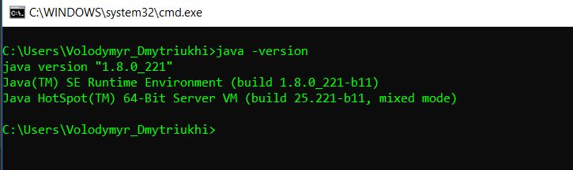
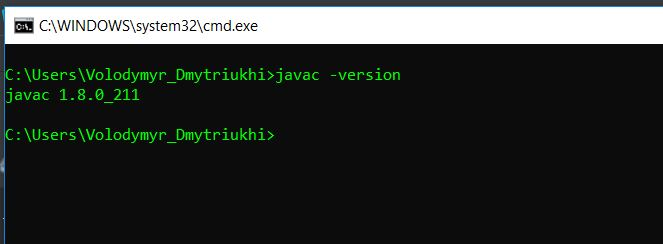

Here we will add all notes that is needed to setup infrastructure and any dependencies to create test automation framework using Java
Go to the link and download latest LTS package of JDK.
After downloading install it.
Check that java was properly installed
Open any console (for example CMD - press Win+R -> type "cmd" -> press Enter)
In console type "java -version"
In console type "javac -version"
If you see an error 'javac' is not recognized as an internal or external command, operable program or
batch file.
you need to set environment variable for java
JAVA_HOME = path to installed java%JAVA_HOME\bin%
Reopen console and check one more time
java -version
javac -version
You should see similar message

